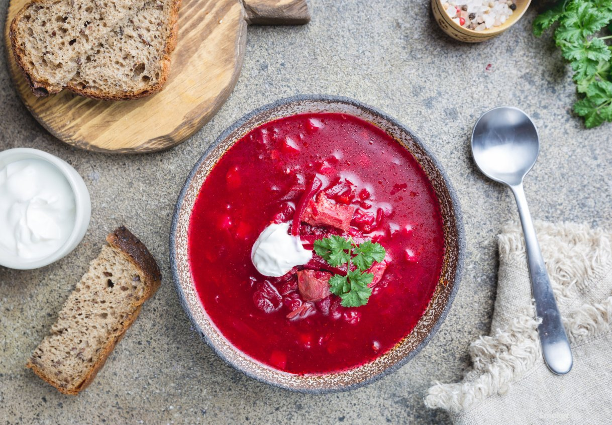

Beef and Beet Borscht

Description
This beef borscht started my lifelong love of adding sour cream to things.
The way the tangy, rich cream melts into the hot, beefy broth is a wonder to
behold.
Ingredients
- 1 (1 inch thick) slice bone-in beef shank
- 3 quarts water
- 1 onion, chopped
- 1 cup chopped carrots
- ½ cup chopped celery
- 1 bay leaf
- 3 cups diced peeled beets
- 2 cups chopped cabbage
- ¼ cup white vinegar, or to taste
- salt and ground black pepper to taste
- 1 cup sour cream, for garnish
- 2 tablespoons chopped fresh dill, for garnish